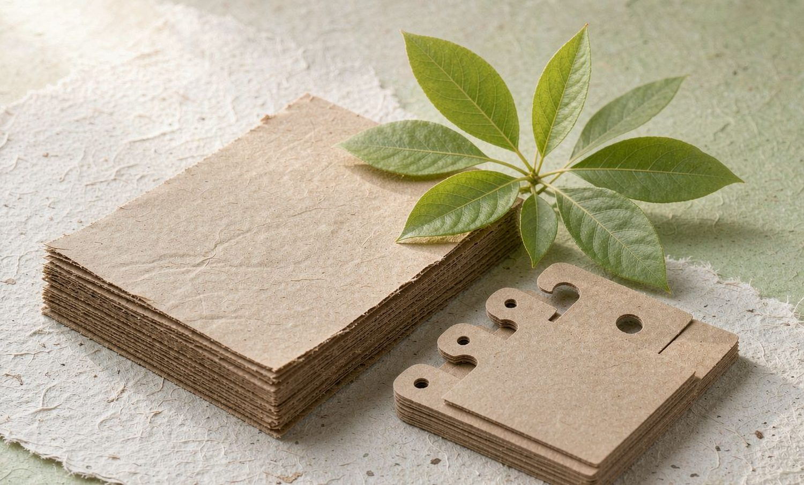

WHY NOW
法规的时间表，就是订单的时间表
过去十年，包装环保是品牌的自选动作；现在，它正在变成零售渠道的入场券。对袜子、内衣这类快消品而言，挂钩虽小，却整只都是塑料——这正是最容易被审核挑出来的部分。
- 欧盟：一次性塑料指令与包装法规持续收紧，零售端悬挂类塑料配件被系统性替换。
- 国内：限塑政策升级叠加双碳目标，出口企业普遍被客户要求提供环保材质证明。
- 渠道：大型商超与电商平台的包装审核清单，已把「可回收 / 可降解」列为常规项。

TIMELINE
包装环保，是怎么一步步变成硬要求的
2019
欧盟通过一次性塑料指令
限制范围从塑料袋扩展到多类一次性塑料制品，零售包装首当其冲。
2021
中国限塑政策全面升级
多行业禁用不可降解一次性塑料制品，包装辅料进入替代窗口期。
2023
品牌方开始向供应链传导
欧美品牌把「无塑料包装」写进供应商行为准则，挂钩、夹子被逐项排查。
2024
包装与包装废弃物法规推进
可回收性、再生含量、过度包装成为硬指标，纸质方案的优势被放大。
2025
纸质挂卡成为主流选项
出口订单中「纸钩 + 纸卡」的组合已从备选变成默认配置。
NOW
你的货架，也可以现在就换
不需要改造产线，换一个挂钩即可完成一次可见的环保升级。
FSC CHAIN
纸从哪来：一条可以被审核的链
FSC 产销监管链认证（CoC）要求从原木到成品每一环都可追溯，这也是我们的方案能站得住的原因。
STEP 01
可持续林场
木材来自通过 FSC 经营认证的林场，采伐量与再生量平衡。
STEP 02
认证纸厂
具备 CoC 监管链证书的纸厂生产原纸，提供批次与证书编号。
STEP 03
模切成型
刀模一次成型，边角料回炉再造，不产生额外固废。
STEP 04
成品出厂
随货提供材质说明与证书复印件，可直接用于客户审核。

COMPARISON
纸钩 vs 塑料钩：几个关键数字
| 指标 | 纸质钩 | 塑料钩 |
|---|---|---|
| 单只重量 | 约 2.5 – 3.5 g | 约 3 – 5 g |
| 原料来源 | 可再生林木 | 石油基 |
| 自然降解 | 数月（工业堆肥） | 数百年 |
| 回收兼容 | 与纸卡同投 | 需单独分拣 |
| 印刷适配 | 胶印 / 烫金 / 压凹 | 移印为主 |
* 数据为行业常规区间，用于量级参考，非实验室检测报告。
OUR COMMITMENT
我们能承诺的四件事
01 · 不用塑料包装
成品用纸箱 + 纸胶带打包，不用缠绕膜、不用气泡袋，拆箱即分类。
02 · 大豆油墨印刷
常规单色印刷使用大豆基油墨，降低 VOC 排放，纸浆回收更友好。
03 · 边角料回用
模切产生的边角料集中回收打浆，重新进入造纸环节，不当作垃圾处理。
04 · 随货给证明
提供 FSC 证书编号、材质说明与回收指引，方便客户写入自己的包装声明。